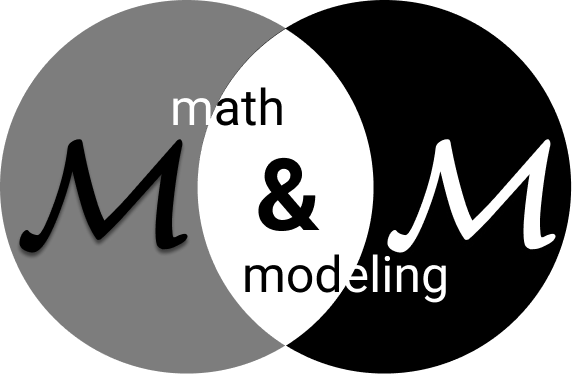
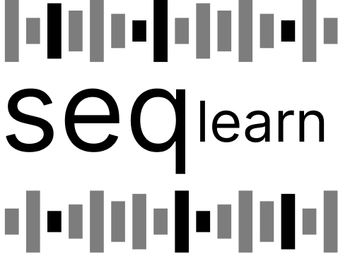

Laboratório de Inteligência Artificial e Aprendizado de Máquina
Dedicado à pesquisa acadêmica rigorosa e ao desenvolvimento de tecnologias fundamentais e aplicadas em Machine Learning.
Sobre o Laboratório
O DpinLab é um grupo de pesquisa consolidado, focado na intersecção entre o aprimoramento teórico de algoritmos e suas aplicações em cenários complexos. Nosso trabalho abrange desde a ciência básica até soluções orientadas a dados e modelagem preditiva avançada.
lo
Estrutura de Pesquisa (Squads)
Operamos no formato de "squads" temáticas. Cada grupo possui uma questão norteadora principal que guia as investigações, do entendimento fundamental até a engenharia de infraestrutura de dados, gerando conhecimento profundo sobre domínios específicos.

Math & Modeling
"Why does it work?"Neste squad, investigamos os fundamentos matemáticos e teóricos subjacentes à inteligência artificial. O foco é compreender as garantias teóricas de aprendizado, dinâmicas de otimização e o comportamento quantitativo de modelos em diversos cenários.
Repositórios & Projetos

Sequence Learning
"What do we learn from data?"Dedicado à análise, modelagem e extração de conhecimento de dados sequenciais e séries temporais multivariadas. Abordamos problemas do mundo real focando em imputação, tratamento de ruídos e representações temporais latentes.
Repositórios & Projetos
Trustworthy AI
"Should we trust it?"Pesquisa focada nos aspectos éticos, de segurança e de interpretabilidade em aplicações reais de Inteligência Artificial. Garantimos que os modelos construídos sejam transparentes, rastreados e consistentes nas suas predições e explicabilidades.
Repositórios & Projetos
Computing & Research Environment
"Can we run it?"Encarregado da engenharia de software e arquitetura de infraestrutura do laboratório. Transforma modelos teóricos e ideias experimentais em pipelines operacionais de ponta, utilizando as melhores práticas e padrões de projeto para Big Data e experimentações MLOps.
Repositórios & Projetos
Publicações Recentes
Ver repositório completo →Uncovering Algorithmic Fairness in Deep Learning–Based Imputation of Multivariate Clinical Time Series in Heart Failure Patients
Encontro Nacional de Inteligência Artificial e Computacional (ENIAC).
CANDAS Dataset: A Cooling Fan Sound Dataset with Modeled Disturbances and Controlled Experimental Conditions
Encontro Nacional de Inteligência Artificial e Computacional (ENIAC)
An Isolation Forest Approach for Robust Anomaly Detection in Industrial Machines Using Out-of-Distribution Acoustic Data
Congresso Brasileiro de Inteligência Computacional (CBIC).